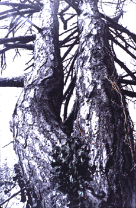
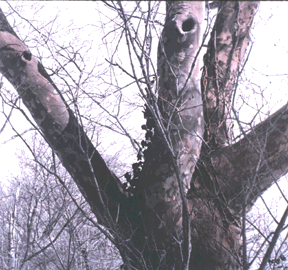

Nancy J. Schneider
Artist's Statement
These trees are from a tiny piece of untouched land in the place I grew up in.
(Lawrence, Long Island, NY). It was here that I first felt the pulse.
Before then, I felt Nature, Earth, even myself as dead. But having the opportunity to
return home and spend some quiet time with my place of origin I realized that this Earth
and its beings are ALIVE and that I am ALIVE.
I can feel the tree energy. We live together in harmony. We communicate.
Breath/Connection
This work is about the connection with my Nature. I want my Nature to be liberated from my past's conventions, to breathe, to be grounded. I thank these trees for sharing
this sacred message with me.

© Nancy J. Schneider
"One"
Hand Colored Gelatin Silver Print, 20"X16"

© Nancy J. Schneider
"Hip"
Hand Colored Gelatin Silver Print, 20"X16"

© Nancy Schneider
"One Body, Two Pairs of Legs"
Hand Colored Gelatin Silver Print, 16"X20"
Date: Tue, 05 Nov 96 08:34:21 0000
From: Garraffa
To: jj68@NYU.EDU
Subject: (no subject)
Would like to leave a message for Nancy Schneider here as she had no
e-mail address listed with her work:
Nancy,
To let you know, I too am from same LI area...Woodmere to be exact. I
grew up on Woodmere Blvd and graduated Lawrence HS in the fabulous year
1969. Growing up there, I remember seeking out 'untouched' locations on
my bike. In fact I remember specifically that behind that Hewlett school
on Peninsula Blvd. there was a creek that went back into some woods. It
seemed enormous back then, most probably it was just an odd lot. But, it
cultivated in me a continuing desire to be a part of the woods and
natural world. My friends and I would always travel there and wander
around. Back behind Old Lawrence was another favorite destination. Even
in Woodmere Park, we used to pretend that the carefully planted shrubs
were an extension of the woods, and we would become woodland creatures
(though I am sure the neighbors did not appreciate our mucking about
through their plantings). There was also a Nature Center of some sort
out there in Lawrence....can't call up the name of it right now. Is that
where your photos were shot? One last remininiscence: I had an
unforgettable fifth grade teacher at PS 6. Her name was Mrs. Sulzbacher.
She was like the gypsy queen. Full of large hoop earings, always tanned,
circle skirts, and a love of nature that seeded in me. Thanks Nancy for
this time to recollect, and the inspiring imagery.
Terry (now a fifth grade teacher, living in Mt.Kisco, NY)
alter@cloud9.net
 Return to Main Page
Return to Main Page
Comments
Please send e-mail to: June Julian jj68@nyu.edu